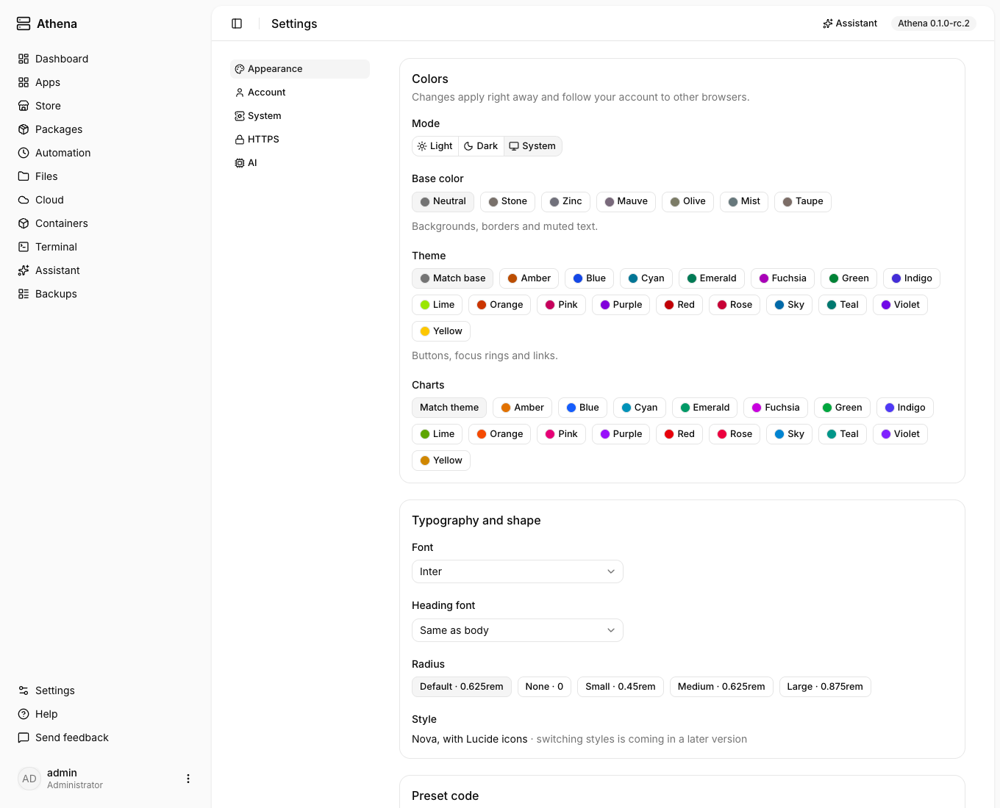
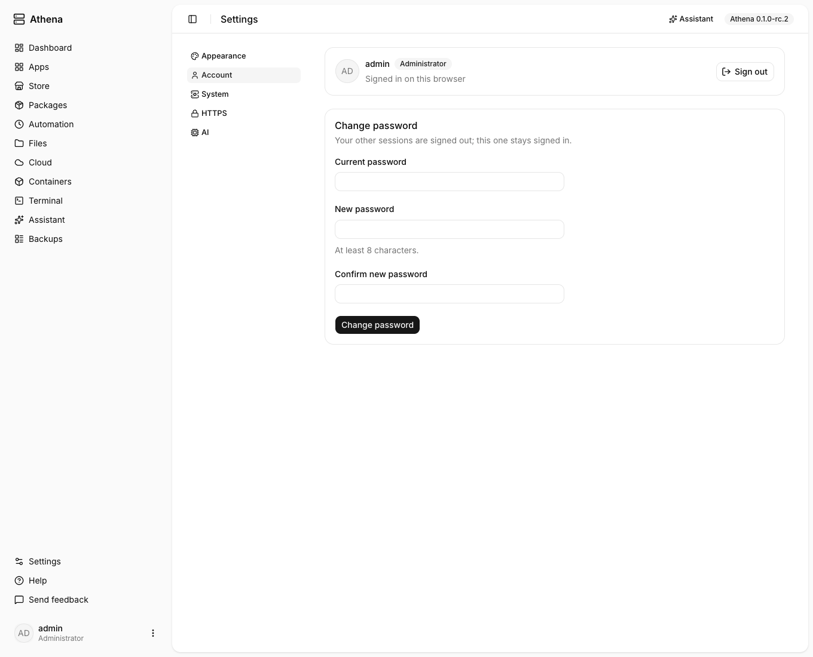
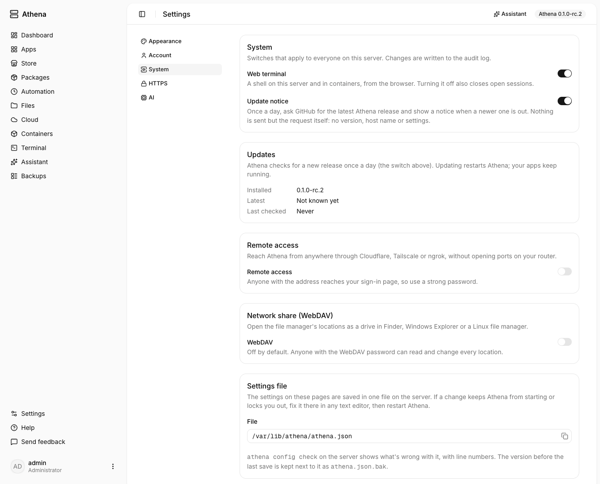
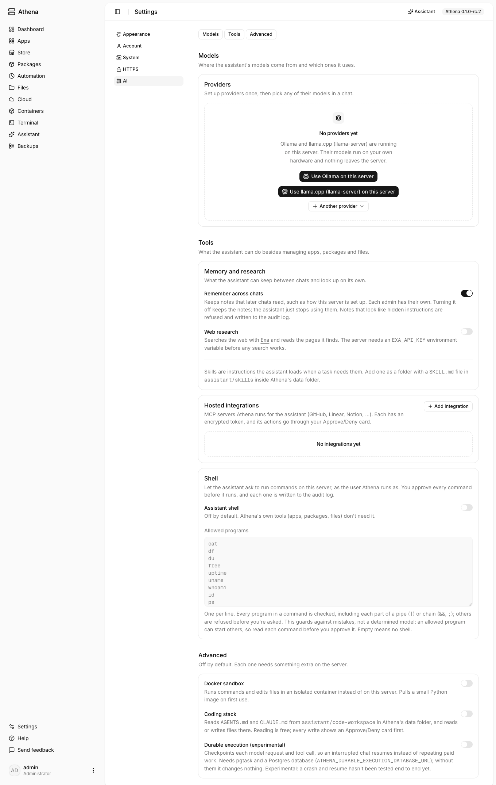

Settings
Open Settings at the bottom of the sidebar. It has five pages: Appearance, Account, System, HTTPS and AI.
Appearance

Everything here applies right away and follows your account to other browsers.
- Mode: light, dark, or follow the system.
- Base color: the tint of backgrounds, borders and muted text.
- Theme: the color of buttons, focus rings and links.
- Charts: the colors of the dashboard charts. "Match theme" uses the theme color.
- Font, heading font and radius: change the typeface and how round the corners are.
- Preset code: a short code that describes your whole look, so you can copy it to another server.
Account

Shows who you're signed in as, with a Sign out button, and lets you change your password. The new password needs at least 8 characters. Changing it signs out your other sessions and keeps this one.
If you forget your password, use athena admin reset-password on the server. See the command line.
System

Switches that apply to everyone on this server. Changes are written to the audit log.
- Web terminal: the terminal on or off. Turning it off also closes open sessions.
- Update notice: once a day Athena asks GitHub for the latest release and shows a notice when a newer one is out. Nothing is sent but the request itself: no version, host name or settings.
- Updates: the installed and latest versions, and when Athena last checked. Updating restarts Athena; your apps keep running.
- Remote access: reach Athena from anywhere through Cloudflare, Tailscale or ngrok. See Remote access and HTTPS. Off by default.
- Network share (WebDAV): open your file locations as a drive in Finder, Windows Explorer or a Linux file manager. Off by default, with its own password. See Files and sharing.
- Settings file: shows where
athena.jsonis. See below.
HTTPS

Choose how Athena is served: Off, Self-signed, Let's Encrypt or Custom. Changes apply right away without a restart. See Remote access and HTTPS for what each mode means.
AI

One page with three parts, reachable from the tabs at the top.
- Models: the providers the assistant can use. Set up Ollama or llama.cpp on this server, or add another provider with an API key.
- Tools, memory and research: remember notes across chats, and search the web (needs an
EXA_API_KEYin the server's environment). You can also give the assistant skills: a folder with aSKILL.mdfile inassistant/skillsinside the data folder. - Tools, hosted integrations: other MCP services such as GitHub, Linear or Notion. Each has an encrypted token, and its actions go through the approval card.
- Tools, shell: let the assistant ask to run commands. Off by default. You approve every command, and only the programs in the allowed list can run.
- Advanced: a Docker sandbox for commands and file edits, a coding stack that reads
AGENTS.mdandCLAUDE.mdfrom a workspace folder, and durable execution (experimental, needs Postgres). All off by default.
See AI assistant for how to use it.
The settings file
Everything you set is saved in athena.json in the data folder. If a change keeps Athena from starting, or locks you out, fix it there in any text editor and restart Athena (the user menu has Restart Athena). Check it with:
athena config checkathena config path prints where the file is, athena config show prints what Athena sees, and athena config reset <section> puts a section back to its defaults. The version before your last save is kept next to it as athena.json.bak.